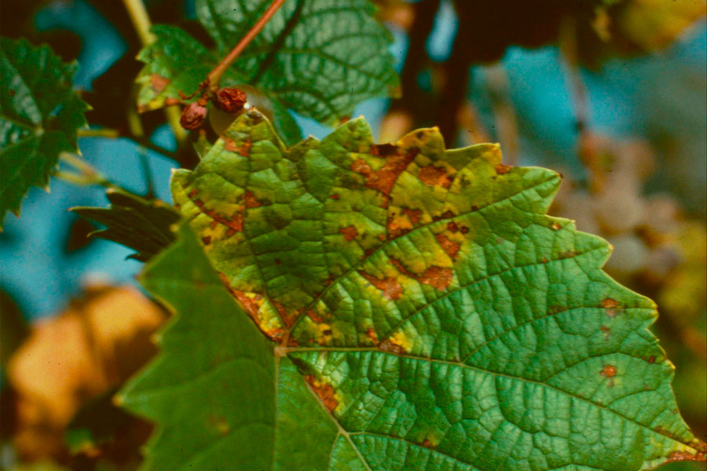

Healthy leaf

While conducting a survey looking for the problems in agriculture which can be solved through technology, we came across a number of problems and decided to take off on each problem.
In the past, we identified the problem of adverse weather in agriculture so we came up with a chatbot which is capable of updating the farmer with live forecast and which can alert farmers a week before any upcoming storm. We even included language translation in the chatbot which provides the farmers with all the information they need in the tip of their fingers.
Know moreNow coming to real world problems in agriculture, there are a number of problems faced by a farmer right from turning the soil preparing it for seeding till harvesting stage of a crop. We can't group all these problems together since there are a variety of solutions. One such problem we're addressing now is the ruthless destruction of crops due to agricultural pests. There are many different kinds of destructive pests, from termites that eat your home’s structure to bed bugs that bite you while you sleep. Some of the worst, however, are pests that feed on plants. Agricultural pests can not only ruin gardens, but they can also ruin entire crops meant to feed hundreds of people.A study by Cambridge shows that every year, farmers combat a variety of pests to make sure their fruits, vegetables, and grains grow successfully. Among crops, the total global potential loss due to pests varied from about 50% in wheat to more than 80% in cotton production. The responses are estimated as losses of 26–29% for soybean, wheat and cotton, and 31, 37 and 40% for maize, rice and potatoes, respectively. Overall, weeds produced the highest potential loss (34%), with animal pests and pathogens being less important (losses of 18 and 16%).
For instance, a regular image processing and machine learning algorithm can be used to classify healthy plants from infected plants like these:
But not every pest leaves spots on the plant leaves. There are many pest underground as well as inside the crop which can NOT be detected by such methods. Hence we came up with a better solution.
That's where our solution comes into play. As we already gave you a brief glimpse, let us go deep into the solution. A thermal sensor is used to capture the heat radiated by an object or a body. We are using thermal sensors to capture thermal
images of plants. A thermal sensor shows the distribution of heat across a body. Blue stands for no to little heat and red stands for maximum heat intensity.
Now, a healthy plant does not generate enough heat so it will be blue in colour. Like the plant in the top right. But if the plant is affected by insects or parasites, the heat generated by the insects can be easily captured using
a sensitive thermal sensor.
For instance, the bottom image is a thermal image of an infected plant. The difference can be noticed clearly.
In this way, the farmer can easily know the condition of the plant and can take necessary actions before things go out of the hand. If traditional image processing techniques were used, the pest inside wouldn't be visible but
a thermal sensor can capture the heat emitted by the hidded pests.
Meet the people behind this project.

Developer
A tech enthusiast and an AI, ML geek. Passionate about Datascience and currently on the journey to become a full stack developer.